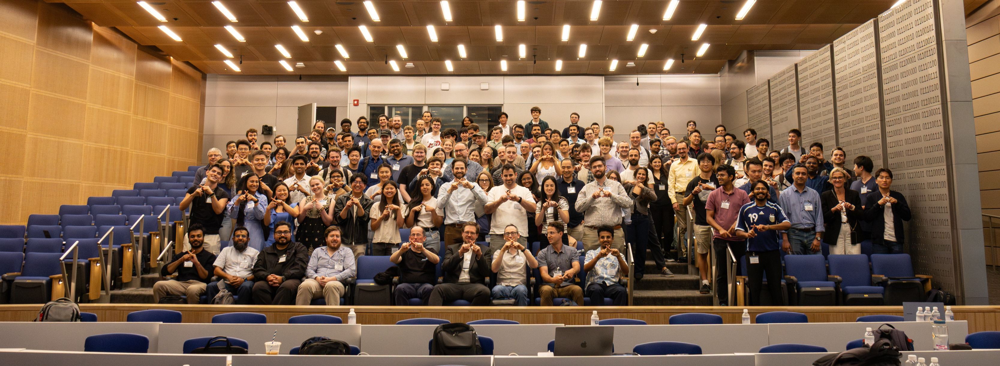
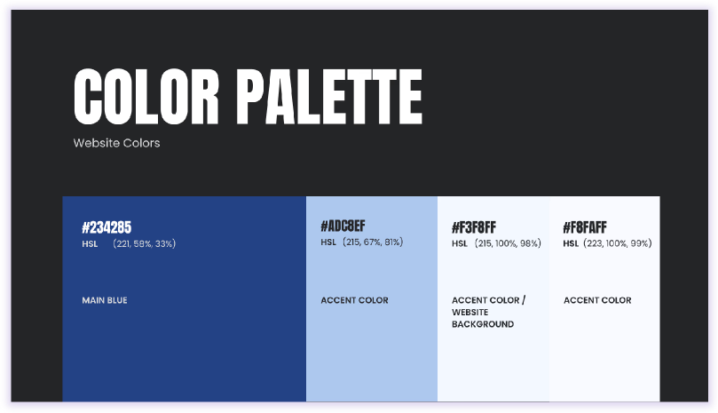
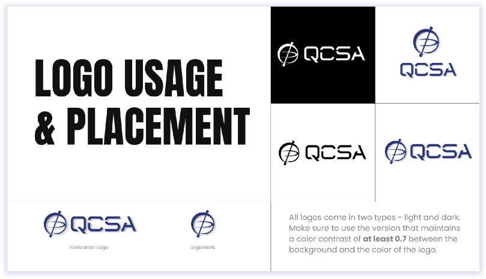
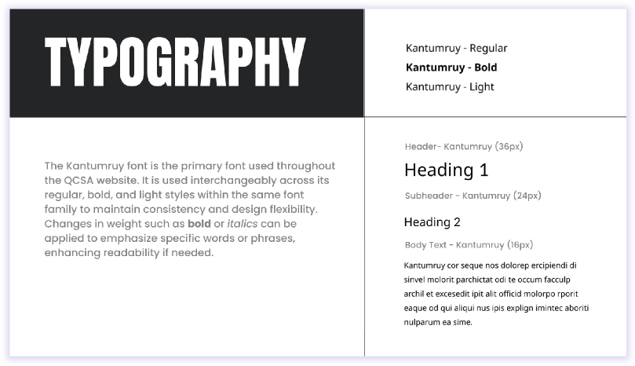
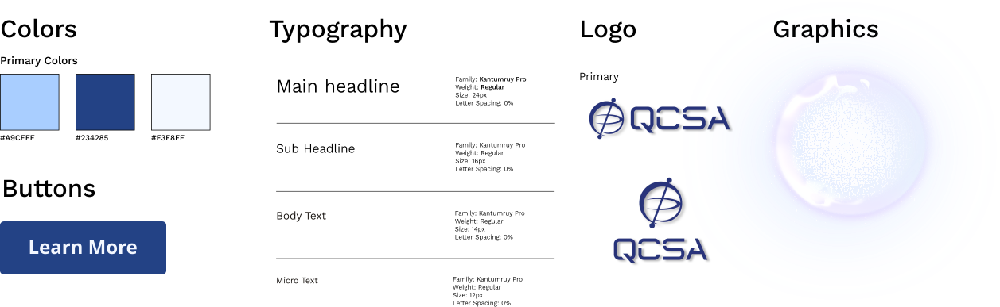
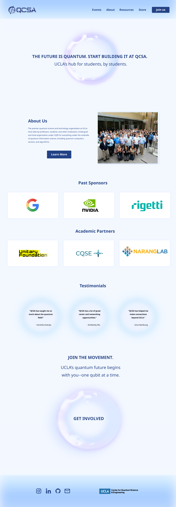

QCSA
Designing a centralized platform for the Quantum Computing Student Association, a 501(c)(3) nonprofit.

Designing a centralized platform for the Quantum Computing Student Association, a 501(c)(3) nonprofit.
The Quantum Computing Student Association (QCSA), based in Southern California, is a quantum nonprofit organization that seeks to make quantum science accessible to students of all levels. QCSA's community is connected through university branches at UCLA, USC, Caltech, and UCSD.

The redesigned website increased visibility and discoverability, resulting in 52% more page views.
The 2026 Quantum Device Workshop welcomed a total of 600 participants, up from 100 attendees at the 2025 workshop.
As the organization grew beyond UCLA and partnered with major companies like Google, NVIDIA, and Rigetti, its existing website no longer reflected the scale and credibility of its work.
How can we redesign QCSA's website to increase visibility
and help more students engage with the organization's resources?
The redesigned homepage clearly introduces QCSA's mission and opportunities from the first interaction.
Restructuring the organization of the events page gave users easier access to upcoming events while still able to explore past events.



Branding guidelines ensure visuals stay consistent across university chapters.
We began by critiquing QCSA's existing website and performing a SWOT analysis:


I interviewed a diverse group of 5+ users — including those who had never heard of QCSA before and experienced board members — to ensure the design is intuitive for both new and returning users.
"I couldn't really tell what QCSA was from a glance. The first image of students in a classroom doesn't explain what the organization does."
"Our current logo features UCLA's mascot, but QCSA needs an identity that multiple university chapters can adopt."
"The current website feels cluttered and hard to navigate. Moving away from Squarespace would give us more freedom to redesign the site around QCSA's needs."
After compiling our findings, we defined three main goals for the redesign:
We worked closely with the QCSA team to create a visual system that felt credible while being scalable across chapters. By keeping QCSA's blue identity but brightening the palette, the redesign made the brand feel more modern and futuristic while staying connected to its original look.

I restructured the site flow to reduce clutter. Instead of spreading information across redundant sections, I organized the website around three core paths: learning more about QCSA, discovering events, and important resources.
The low-fidelity prototype helped us map out the site's structure before moving on to visuals. I played around with section placement across pages so we could gather feedback from the QCSA team early on.
01 Home Page

A new hero section clearly demonstrating what QCSA is and does.
Featuring past sponsors and testimonials from current students to strengthen credibility.
A clear call to action inviting visitors to join.
02 Events Page
To streamline navigation, I reorganized the subsection hierarchy to prioritize upcoming events, ensuring students quickly find what is most relevant.
03 Navigation Bar

The new navigation bar simplifies the site by removing unnecessary tabs and grouping related content.
I never expected to learn an inkling about quantum computing. But working with the QCSA team opened me up to a new field and taught me how important it is to understand what you're designing for! Understanding the field helped me make design decisions that balanced technical accuracy with an experience that felt approachable for all.
A redesign needs to do more than look polished. Each decision connects back to QCSA's goals and creating a brand that can grow with the organization.


Improving meditation goal tracking and sharing to encourage consistency.